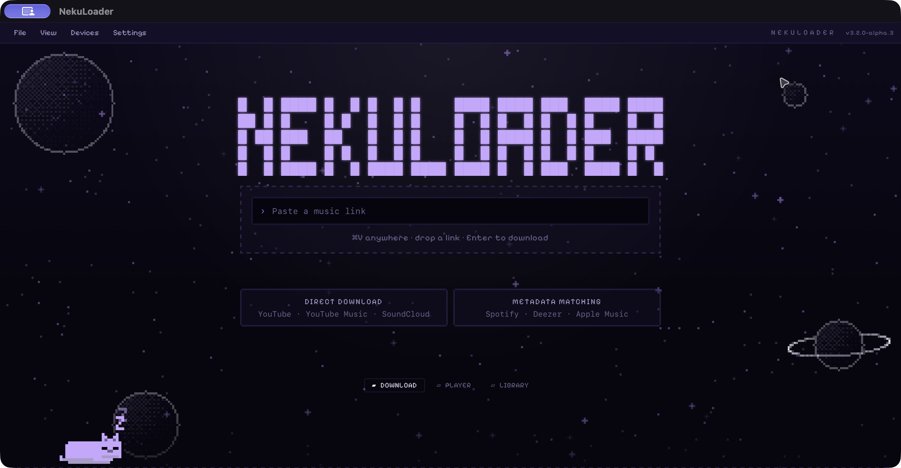

01
Bring a link.
Recognize supported links, choose an output format, and keep a persistent queue with local history.
Your music. Your little universe.
A desktop home for your music, with a cat for company.
Collect authorized audio, play your local library, and send your favorites to your phone.
macOS · Windows · Linux targets / availability below

The native rewrite brings the familiar Neku personality to a local music workflow. Still an alpha, still growing.
Recognize supported links, choose an output format, and keep a persistent queue with local history.
Scan your music folders, search your collection, and play local files in the app. Themes and six languages make it yours.
Send files through tokenized Wi-Fi sharing or Android USB transfer. On iPhone, shared downloads go to Files, not directly to Apple Music.
Direct extraction and catalog matching are different workflows. Here is what the current 3.2 alpha implements.
FLAC and WAV are output formats, not a quality upgrade. Converting a lossy source cannot restore missing audio detail. Use media you own or are authorized to download.
Accessible media through yt-dlp. Availability depends on the source and its access requirements.
Accessible media through yt-dlp, using the same managed downloader components.
SpotDL matches catalog information to another audio source, with a public-catalog fallback for tracks and albums. Audio and quality can differ from Spotify. Full playlist fallback is unavailable; ALAC is unavailable on the SpotDL path.
Tracks, albums and playlists use public catalog metadata followed by duration-checked audio matching.
Songs and albums use public catalog metadata and duration-checked matching. Apple Music playlists are unavailable through the public API.
Check the current build and its limits before installing. This testing release is not yet the stable replacement for the Java 3.1 edition.
First run: Settings → Components & updates → Install required components. Setup starts with your click. App updates are manual.
Release notes & other builds ↗Checking installer availability…
↓ Download for MacA download appears only when a published installer is listed.
Checking installer availability…
↓ Download .debglibc 2.36 or newer. A download appears only when an experimental installer is published.
Experimental: headless startup tested; desktop and phone validation ongoing.
This is a testing alpha for Mac Apple silicon, tested on an existing macOS installation. It is not signed with Apple Developer ID or notarized. Clean-machine installation and physical phone testing remain open. Windows and Intel Mac downloads are not currently offered. Linux is offered only when an experimental Debian 12 x64 build is listed in the download section; headless startup testing does not establish desktop or phone compatibility. Read the release notes before installing.
Spotify uses SpotDL metadata matching, with public-catalog fallback for tracks and albums. It does not download Spotify's catalog stream. The result may differ in recording or quality. Full playlist fallback is unavailable because the public embed cannot guarantee a complete track list; ALAC output is not supported on the SpotDL path.
Use NekuLoader for media you own or are authorized to download. Recognizing a link does not grant copying rights or permission to bypass access controls.
The native app can explicitly install managed yt-dlp, Deno, FFmpeg and FFprobe components into its app-data directory. It also attempts optional SpotDL installation on supported platforms. Assets are checked against published SHA-256 metadata and health-checked before use. See the third-party notices.
Try a suitable test build, describe where you got stuck, and include your operating system and app version in a GitHub issue. Please remove private links, cookies and personal paths from logs. Official alpha binaries are free to download, install and run for personal or commercial use under the proprietary license. Source code and original asset rights are reserved; see LICENSE.txt in the repository.
Tell us where you got stuck or what your music workflow needs.